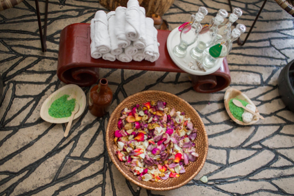
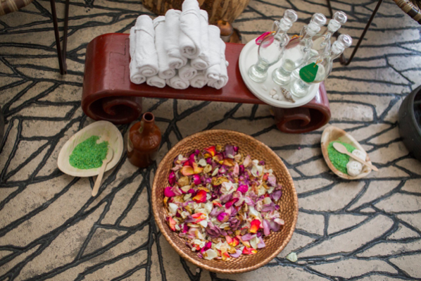

Киев - Спа
В совместном проекте Vogue UA, Mersedes и MasterCard редактора Vogue ездят по Украине и открывают самые интересные места. Алена Пономаренко проехала на Smart по киевским спа и рассказывает, как это было.
Я очень люблю киевский OKO Spa. Все начиналось с уютного затемненного салона на тихой улице Дарвина, сегодня у него появилось продолжение – просторное, светлое, медитативное пространство на Жилянской. Здешнее спа-меню – обширное и разнообразное.
Можно прийти на тайский массаж, а можно провести здесь весь день – с любимым или с подружками. Для девичников тут устроена отдельная комната с несколькими татами, разделенными перегородками из полупрозрачного тюля, и общим пространством для чаепитий.

Адрес:
Рейтарской 9,
вход через серую калитку


Первым делом я повалялась в подвесных качелях и гамаках: они тут какие-то органические, что ли: сделаны из натуральных материалов – лен, дерево, - и приятно баюкают.

Следом перемерила наряды украинской марки Nomad, представленные в салоне. Они сшиты из старинного, тканого вручную полотна (его разыскивают по всей Украине), из волокон конопли или льна, и оформлены тоже вручную – но уже с учетом современной моды.
Рядом с одеждой расположился ювелирный корнер: необычные украшения, наполненные смыслом. Некоторые гармонизируют чакры и активируют нужные. Например, надеваешь на шею тонкую цепочку, от которой спускаются к талии длинные металлические нити с покачивающимися подвесками, - и, кажется, что меняются даже осанка и жесты.
 

Все процедуры в Око спа начинаются с того, что мастер предлагает понюхать ароматные смеси. Одни пахнут чистой ромашкой, другие – чувственной смесью, где явственно ощущается жасмин. В зависимости от того, какую выбирает клиент, мастер определяет текущее состояние его доши – вата, пита, капха. И уже исходя из этого проводит процедуру.
Мне омыли ноги в медном тазу, провели в полутемную комнату, уложили на кушетку, закололи волосы цветком – и мастер-тайка начала танец обволакивающих движений вокруг моего тела. Периодически было щекотно, периодически – очень интенсивно, но чаще я проваливалась в сон. Два часа пролетели незаметно.
Уже одевшись, я вспомнила, что выбежала из дому без наличных. Выручила платиновая Master Card. Я расплатилась – и отправилась на Подол, в один из главных спа страны, Elixir Luxury Beauty.
Малышу Smart пробки не страшны: он лавирует в потоке, как заряженный атом. А вдобавок – позволяет припарковаться там, где обычной машине нечего и мечтать.

Переодевшись в халат, я отправилась в хамам. Чудо, если удастся попасть к Ирине – ее руки творят чудеса. В хамаме Ирина взбила пену в пышные кремовые облака и промассировала мне каждую косточку, каждую мышцу.

После хамама есть два способа продолжать день: отправиться спать – или побежать по делам. Я выбрала второе – и чтобы вернуться в обычное измерение, отправилась в бассейн. Бассейн огромный, с противотоком и гидромассажем. 15 минут – и чувствуешь, как энергия наполняет тело.
Единственное, потом жаль красивой прически. Но в Elixir мне предложили укладку – и за 15 минут превратили мой пучок в роскошную гриву. Мастер, правда, отметила, что из-за осветления мои волосы на кончиках суховаты и нуждаются в особом уходе. Вдобавок посоветовала наносить сухое масло не перед укладкой (так оно «поджаривается» на волосах), а после нее.
Проведя в Elixir несколько часов, я успела проголодаться. Попыталась прикинуть в уме, сколько времени у меня уйдет на нормальный обед (салат и суп) и уже готова была махнуть рукой. Но мне объяснили, что из Vogue Café, расположенного двумя этажами ниже, доставят еду в мгновение ока.